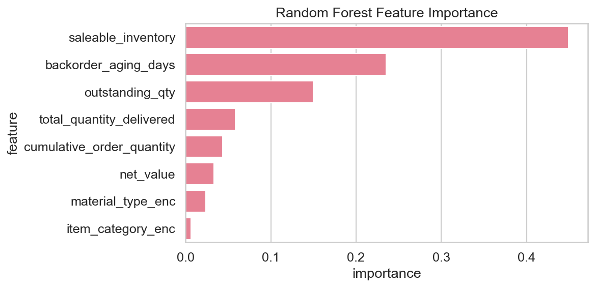

Progress Report Mar 5th
Data Capstone - SAP Backorder Prediction | Models, Visualizations, Progress
Data Capstone - SAP Backorder Prediction | Models, Visualizations, Progress
What: Four classifiers predict backorder risk. Data: 52K rows, 80/20 stratified split (train 41.7K, test 10.4K), ~10% positive. Decisions: class_weight/scale_pos_weight for imbalance. Note: v1 used leaky features; v2 removed them. Interpret: F1 = precision/recall balance; ROC-AUC = ranking quality.
Test-set metrics. Higher recall = fewer missed backorders; higher precision = fewer false alarms.
| Model | Accuracy | Precision | Recall | F1 | ROC-AUC |
|---|---|---|---|---|---|
| Logistic Regression | 90.0% | 50.7% | 98.7% | 67.0% | 0.91 |
| Random Forest | 99.97% | 99.81% | 99.91% | 99.86% | 1.00 |
| XGBoost | 99.95% | 99.72% | 99.81% | 99.77% | 1.00 |
| LightGBM | 100% | 100% | 100% | 100% | 1.00 |
Ridge/ElasticNet predict log(1 + backorder_units) from same features. Outputs feed replenishment decisions (how much to order).
What: Figures from EDA and modeling. Interpret: Confusion matrices show true/false positives and negatives; feature importance shows which predictors matter; correlations show multicollinearity.
Rows = actual, columns = predicted. Diagonal = correct. Top-left: true negatives; bottom-right: true positives. Lower off-diagonal = better.
Actual vs predicted backorder risk. Top row: Logistic Regression, Random Forest. Bottom row: XGBoost, LightGBM.

Bar height = how much each feature reduces impurity. (v1: outstanding_qty, saleable_inventory top; v2 uses non-leaky features.)

Heatmap: |r| near 1 = strong linear relationship. High correlations between features may suggest redundancy.

What: Four 2-week sprints. Flow: ETL → EDA → classification (LR + trees) → regression (Ridge/ElasticNet) → integration.
| Sprint | Dates | Status |
|---|---|---|
| Sprint 1 | Jan 20 – Feb 2 | Complete: ETL, master tables |
| Sprint 2 | Feb 3 – Feb 16 | Complete: EDA, visualizations |
| Sprint 3 | Feb 17 – Mar 2 | Complete: LR, RF, XGBoost, LightGBM, class imbalance |
| Sprint 4 | Mar 3 – Mar 16 | In progress: Ridge/ElasticNet regression |
Interpret: (1) Class balance—imbalance drives class_weight/scale_pos_weight. (2) Feature importance—top predictors. (3) Model comparison—tree models lead; LR baseline.
~10% of order lines have backorder risk. We use class_weight and scale_pos_weight to handle this imbalance.

Outstanding quantity and saleable inventory drive backorder predictions. Net value and backorder aging also matter.
LightGBM and XGBoost lead. Logistic regression is interpretable but has more false positives.
Data → features → classification (risk yes/no) and regression (magnitude) → replenishment action.
Gantt: done = complete; active = in progress. Sprints 1–3 done; Sprint 4 active.